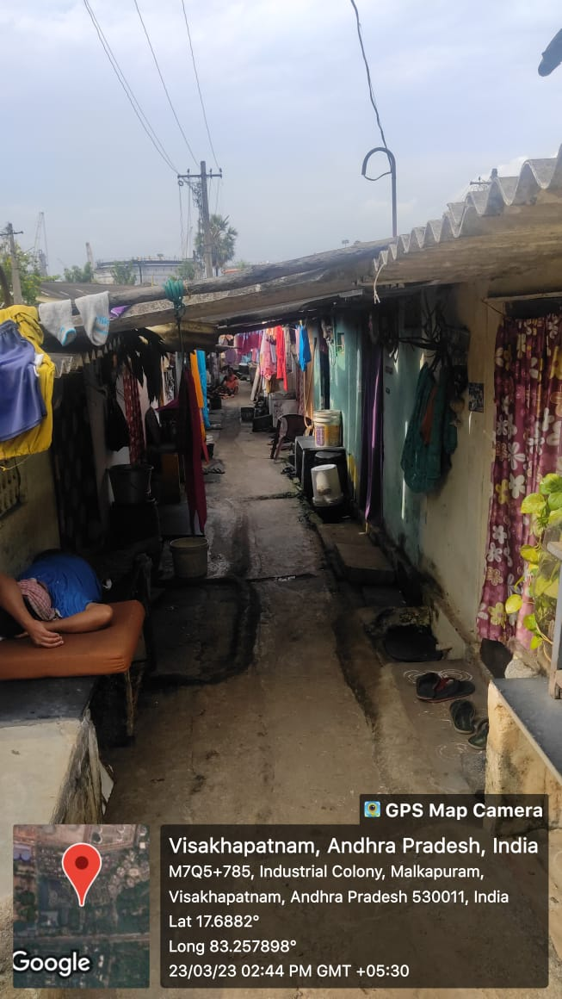

Malkapuram

Malkapuram is a slum area located in the city of Visakhapatnam under the jurisdiction of GVMC (Greater Visakhapatnam Municipal Corporation). The slum area is home to a significant population and faces several challenges that impact the well-being of its residents.
Major Problems
- Social stigma: Residents of the slum area often face discrimination and social stigma due to their living conditions. This can impact their ability to access education and employment opportunities and can further perpetuate the cycle of poverty.
- Lack of access to clean water: Many households in Malkapuram slum do not have access to clean drinking water, leading to the use of contaminated water sources that can cause health problems.
- Environmental pollution: The slum area is prone to environmental pollution due to lack of proper waste management and sanitation facilities. Garbage and debris are often dumped in open spaces, leading to the spread of diseases and contributing to the deterioration of the local environment.